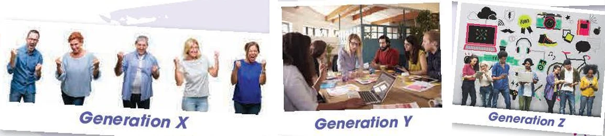

Different
generations
Lesson 3 — Reading
- Gen X
- Gen Y
- Gen Z
Five stops in 45 minutes
- 🔍
Mystery picture
Warm-up
5 min - 📷
Before reading
Photos + new words
9 min - 📖
Read
Tasks 2–4
20 min - 💬
Discuss
Do you agree?
8 min - ✅
Wrap-up
Exit ticket
3 min
Warm-up
The mysterious picture
5 minutesWords from Lesson 2
1. special qualities that belong to a group of people or things common characteristics
2. a disagreement between different generations generational conflict
3. beliefs about what is important in the culture of a society cultural values
4. a belief that has existed for a long time without changing traditional view
Key word GENERATIONS
Before reading
Photos and new words
9 minutesWhat do you know about each generation?

Think about: age · characteristics · interests · life experiences
Words from the article
- characteristic (n) /ˌkær.ək.təˈrɪs.tɪk/ đặc điểm
- critical (adj) /ˈkrɪt.ɪ.kəl/ có tính phản biện
Words from the article
- creative (adj) /kriˈeɪ.tɪv/ sáng tạo
- platform (n) /ˈplæt.fɔːm/ nền tảng (số)
While reading
Different generations · page 21
20 minutesEach generation has its characteristics
Over the past two centuries, different generations were born and given different names. Each generation comes with its characteristics, which are largely influenced by the historical, economic, and social conditions of the country they live in. However, in many countries the following three generations have common characteristics.
Born 1965–1980
Generation X refers to the generation born between 1965 and 1980. When Gen Xers grew up, they experienced many social changes and developments in history. As a result, they are always ready for changes and prepared to work through changes. Gen Xers are also known as critical thinkers because they achieved higher levels of education than previous generations.
Millennials · early 1980s – late 1990s
Generation Y, also known as Millennials, refers to those born between the early 1980s and late 1990s. They are curious and ready to accept changes. If there is a faster, better way of doing something, Millennials want to try it out. They also value teamwork. When working in a team, Millennials welcome different points of view and ideas from others.
Late 1990s – early 2010s
Generation Z includes people born between the late 1990s and early 2010s, a time of great technological developments and changes. That is why Gen Zers are also called digital natives. They grew up online and never knew the world before digital and social media. They are very creative and able to experiment with platforms to suit their needs. …
And next… Gen Alpha
… Many Gen Zers are also interested in starting their own businesses and companies. They saw so many people lose their jobs, so they think it is safer to be your own boss than relying on someone else to hire you.
Soon a new generation, labelled Gen Alpha, will be on the scene. Let’s wait and see if we will notice the generation gap.
Guess from the context
a to try or test new ideas · b went through · c to employ · d wanting to know about something · e people born in the era of technology
1. experienced b
2. curious d
3. digital natives e
4. experiment a
5. hire c
What is the article mainly about?
A. The study of different generations
B. Generational differences in different societies
C. Characteristics of different generations
C · Characteristics of different generations
Gen X, Gen Y or Gen Z?
1. They enjoy working in a team with others. Gen Y
2. They can use apps and digital devices in creative ways. Gen Z
3. Critical thinking is one of their common characteristics. Gen X
4. Most of them plan to have their own businesses. Gen Z
5. They are known for their curiosity. Gen Y
After reading
Do you agree?
8 minutesDo you agree with the descriptions of each generation?
- Gen Z are very creative.
- Gen Y enjoy teamwork.
- Gen X are better critical thinkers.
- Young people prefer being their own boss.
I agree because … · I don’t completely agree because … · In my experience, … · For example, …
Complete ONE sentence before you leave
- 📖
Today I learned that Generation …
- 📚
One new word I can use is …
- 🪞
I am similar to Generation … because …
Homework
1. Do the Reading exercises in the workbook.
2. Ask a parent or grandparent: “What was life like when you were my age?”
3. Get ready for Lesson 4 — Speaking.